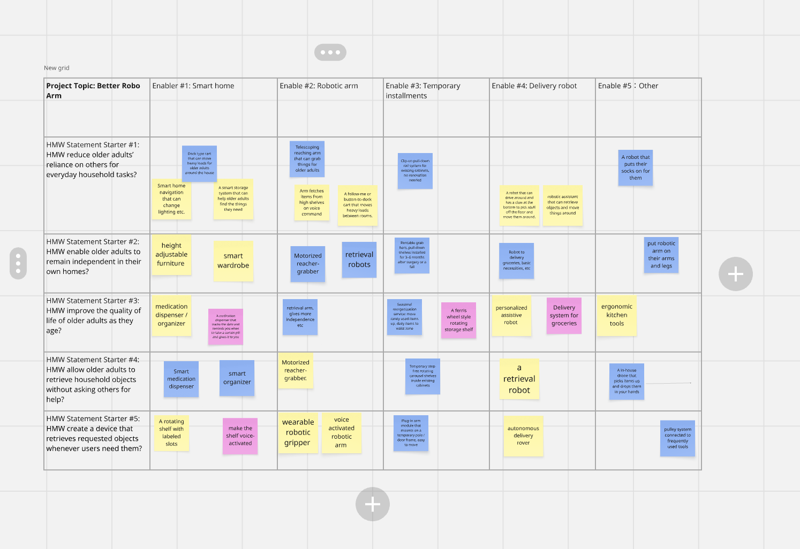

Minseo
Technical · hardware focus
DES INV 15 · Fall 2026 · UC Berkeley
Helping older adults age in place safely
The people behind this DES INV 15 project.
Technical · hardware focus
Technical · hardware focus
Software · business & management focus
Our study examines the everyday activities of reaching and retrieving items, such as retrieving items from heights, lifting items from the ground, and handling objects in the living room for elderly individuals living alone in their homes, and the risks of falls associated with them.
Understanding the challenge before exploring directions.
Older individuals want to remain at home, but even routine activities at home are becoming more and more dangerous as people age. Whether it is grabbing a bottle from the top shelf, bending down for an object dropped on the floor, stepping on the stool to reach the top shelves, or moving things across the room, balance and muscle strength are challenged. There is no help for such minor problems because the older person usually lives alone, and the consequences of the inability to cope with them properly may be severe. Even one fall may cause a broken hip, the need to spend some time in the hospital, and the end of one’s independence.
1 in 4
adults 65+ report falling every year (over 14 million people)1
#1
falls are the leading cause of injury and injury-related death for adults 65+1
3.85M
older adults treated in emergency departments for fall injuries in 20232
43,020
adults 65+ died from falls in 20242
+21%
rise in the age-adjusted fall death rate for adults 65+, 2018 → 2024 (64.7 → 78.4 per 100,000)1
75%
of adults 50+ want to stay in their current home as they age3
~2 in 3
falls among high-risk older adults happen inside the home5
28%
of adults 65+ live alone6
Falls do not occur primarily on slippery sidewalks; they occur at home, when people are engaged in everyday activities. According to one research conducted on older females, 62% of falls took place at home or within close proximity to it, and the most common locations were living rooms and kitchens. In addition, falls generally took place when walking, holding things, and bending down4.
In scope: adults 65+ who live alone in their own homes, and the everyday indoor tasks of reaching for, picking up, and moving household objects (high shelves, low cabinets, floor-level items, carrying things between rooms).
Out of scope: medical treatment and fall recovery, outdoor mobility and transportation, stairs as a building-design issue, and people living in nursing homes or assisted living.
How might we help older adults living alone reach everyday objects without risking a fall?
From our Week 8 assignment — a primary user we design for.
Primary persona
The Independent Homeowner
“I don’t need someone to do everything for me. I just want to be able to reach the things I need without worrying about hurting myself.”
Margaret has lived alone in her single-story home for 18 years and enjoys cooking, reading, knitting, and time with her daughter. She values running her household on her own, but reaching into low cabinets, high shelves, and the floor has become uncomfortable, especially when lifting heavier items from awkward positions. She has moved everyday items onto her countertops and uses a long-handled grabber for light objects, but neither fully solves the problem, so she still waits for her daughter’s help with heavier things.
Source PDF: margaret-persona.pdf
From our Week 8 assignment — moving up and down from our initial How Might We.
Initial How might we?
HMW help older adults safely retrieve everyday household objects without excessive bending or reaching?
HMW improve the overall physical well-being of older adults living independently?
HMW reduce preventable injuries among older adults in their homes?
HMW minimize physical risks associated with everyday household activities?
HMW improve the quality of life of older adults as they age?
HMW enable older adults to remain independent in their own homes?
HMW reduce older adults’ reliance on others for everyday household tasks?
HMW create living environments that accommodate people of all physical abilities?
HMW help homes adapt to residents’ changing physical needs as they age?
HMW make everyday household objects easier and safer for older adults to access?
HMW reduce the need for older adults to bend, stretch, or climb when retrieving objects?
HMW provide physical assistance for accessing objects in difficult locations?
HMW develop a robotic arm that safely retrieves objects from high shelves and low cabinets?
HMW allow older adults to retrieve household objects without asking others for help?
HMW create a device that retrieves requested objects whenever users need them?
HMW develop a voice-controlled robotic arm that retrieves common household objects on demand?
HMW make retrieving household objects easier without requiring major home modifications?
HMW design a compact assistive device that operates safely within existing homes?
HMW create a robotic gripping mechanism that safely handles objects of different shapes and weights?
Source PDF: abstract-ladder.pdf
From our Week 9 workshop — idea generation across How Might We starters and enablers.

How we work together across the semester.
| Name | Focus | Responsibilities |
|---|---|---|
| Minseo | Technical · hardware | Hardware exploration, physical/interaction prototyping, technical feasibility for reaching/fetching aids; helps with user testing of physical concepts |
| Leo | Technical · hardware | Hardware exploration, build/iterate physical prototypes alongside Minseo; supports testing and technical documentation |
| Aadi | Software · business & management | Project coordination, timeline & deliverables, website and presentation, secondary research synthesis, stakeholder/business framing |
Everyone participates in interviews, ideation, and testing; Minseo and Leo lead technical/hardware work; Aadi leads coordination, software/web, and management.
| Week | Milestone | Owner |
|---|---|---|
| Oct 19 – Oct 25 | Finalize topic, problem description, HMW, website v1 | All / Aadi (site + coordination) |
| Oct 26 – Nov 1 | Secondary research + interview 3–5 older adults or caregivers | All (Aadi coordinates) |
| Nov 2 – Nov 8 | Synthesize findings, personas, refine HMW | All |
| Nov 9 – Nov 15 | Ideation and concept selection | All (Minseo + Leo weigh technical feasibility) |
| Nov 16 – Nov 22 | Low-fidelity prototypes | Minseo + Leo (Aadi supports docs/site) |
| Nov 23 – Nov 29 | User testing + iteration (Thanksgiving week, lighter load) | All (Minseo + Leo run prototype tests; Aadi organizes) |
| Nov 30 – Dec 6 | Final prototype, website update, presentation prep | All (Aadi owns site/presentation polish; Minseo + Leo own final prototype) |
| Final week | Final presentation | All |